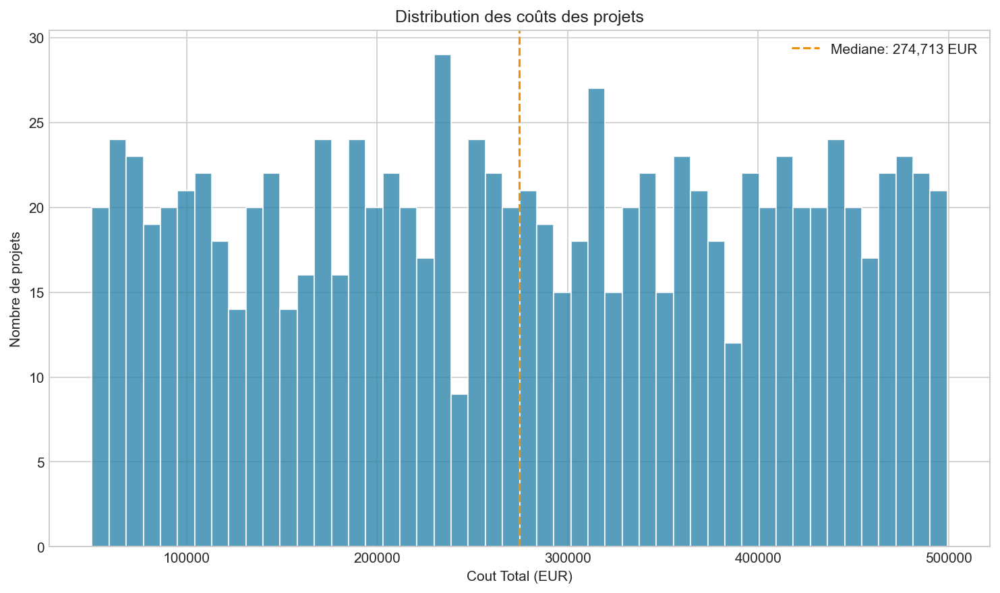
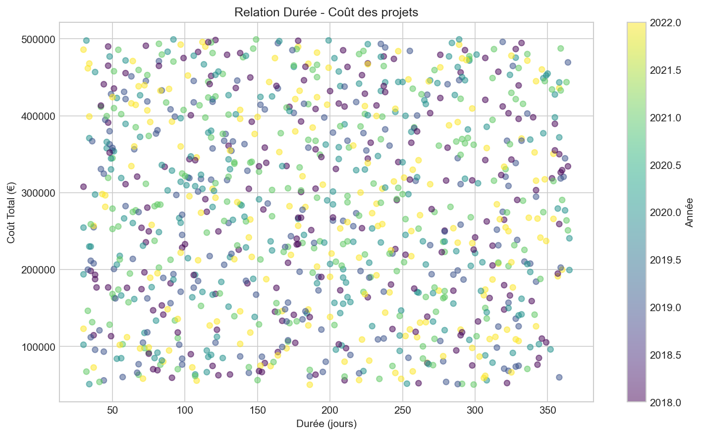
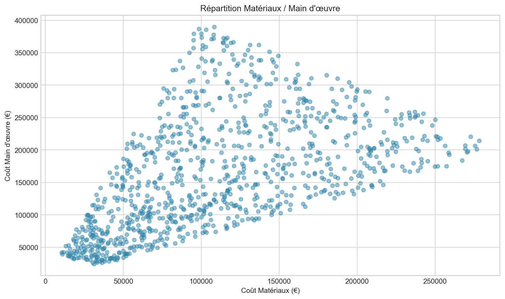
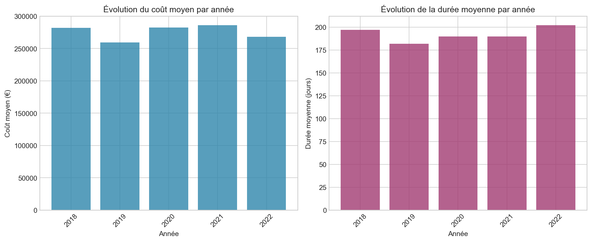
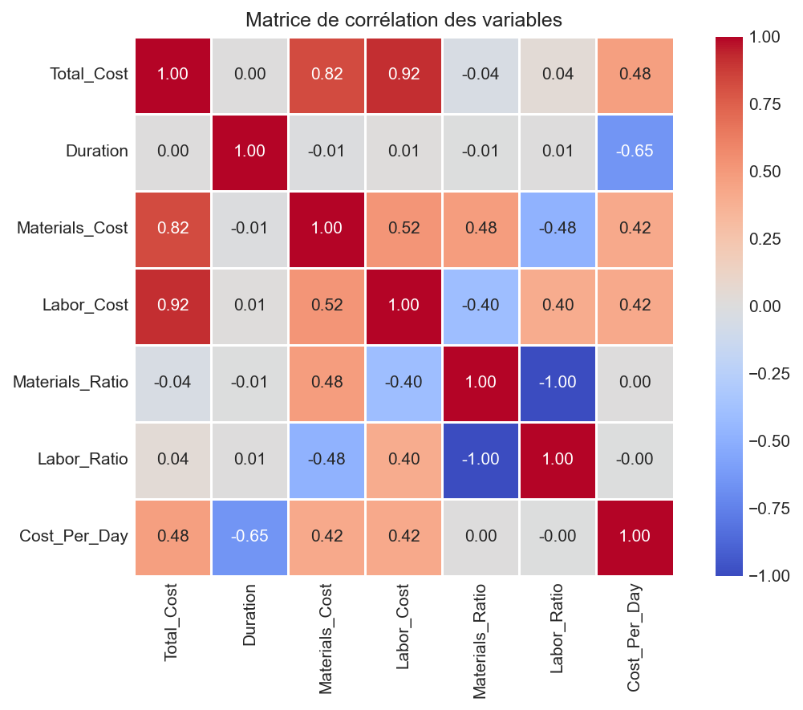
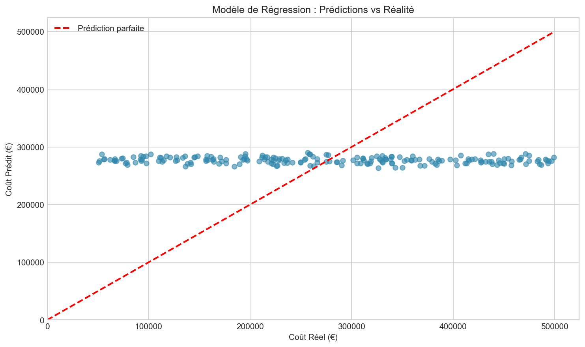
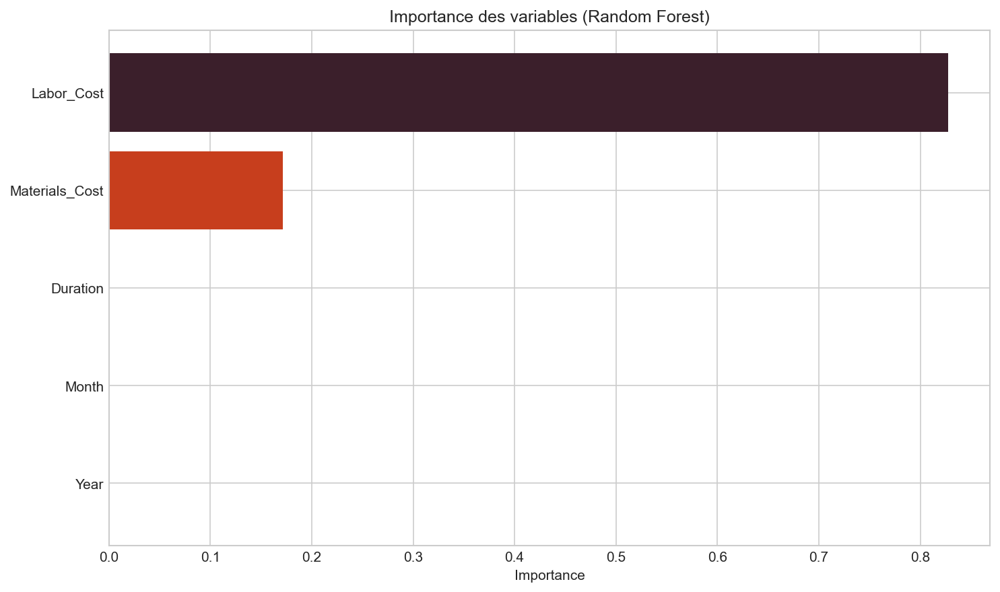

Projet Data Engineering | Rapport d'analyse des projets de construction
Analyse des données historiques de 1 000 projets de construction pour identifier des tendances et créer un modèle prédictif de coûts.







| Composant | Technologie |
|---|---|
| Analyse | Python, pandas, scikit-learn |
| Données | SQL |
| Visualisation | Matplotlib, Seaborn, Power BI |
Call to Action
Vous souhaitez échanger sur ce projet ?
Je serais ravi de vous présenter l'approche technique, les choix de modélisation et les pistes d'amélioration.
N'hésitez pas à me contacter pour en discuter.
Auteur | Jules COLONAS
Profil LinkedIn | Jules COLONAS